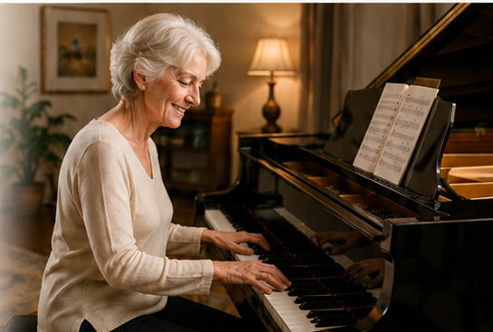
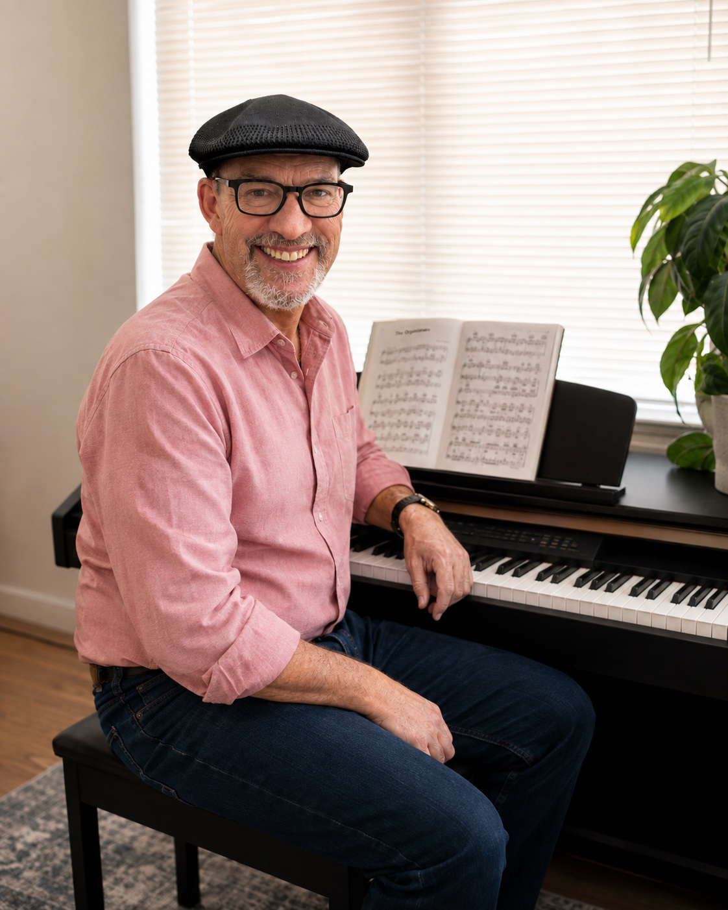

Learn to play
Begin at a comfortable pace with supportive instruction designed specifically for adults.
● Glendale, Colorado · Serving the Denver Metro Area
Whether you want to start for the first time or return to the piano after years away, I offer warm, encouraging instruction tailored to adults of all levels.

Begin at a comfortable pace with supportive instruction designed specifically for adults.
Reconnect with the piano, rebuild confidence, and enjoy making music again.
Choose studio lessons in Glendale or schedule an in-home lesson throughout the Denver metro area.
About Me
Welcome! I’m a retired music educator, professional pianist, and published composer who has spent a lifetime making and teaching music. After many rewarding years teaching students of all ages, I now enjoy working exclusively with adults.
Adult students bring unique goals and life experiences, and I believe lessons should be encouraging, flexible, and centered on the music that inspires you. Whether you’ve always wanted to play, are returning after many years away, or simply wish to enjoy music more fully, I’d be delighted to help you reach your goals.
I hold a bachelor’s degree in Music from Western Washington University and a master’s degree in Choral Conducting from Oklahoma State University. My decades of teaching and performing experience inform a practical, patient approach that meets you where you are and helps you grow.

Who I Teach
Never touched a piano? Wonderful. Many adults begin after retirement or finally fulfill a lifelong dream. We’ll start from the beginning, build skills step by step, and keep the experience relaxed and encouraging.
Played as a child or took lessons years ago? We’ll rebuild your skills without making you start over. We’ll find what you remember, refresh what needs attention, and get you enjoying music again.
Already play? Let’s go deeper. We can focus on polish, interpretation, technique, repertoire, musical expression, and helping you play with greater freedom and confidence.
What You’ll Learn
Your lessons are tailored to your interests, goals, and tastes. We’ll focus on the music you love while building a strong foundation of skills that can serve you for years to come.
Lessons are always tailored to your interests.
Why Adults Enjoy My Lessons
My teaching is supportive, encouraging, and centered on you. You set the pace, and we celebrate progress—large and small.
Lesson Options
Rates
$30 / 30 minutes
$50 / 60 minutes
Starting at $70 / 60 minutes
Rate may vary depending on location.
Contact
Reach out to ask about availability, studio lessons, or an in-home lesson in your part of the Denver metro area.